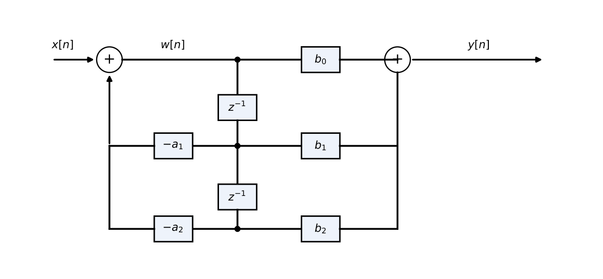
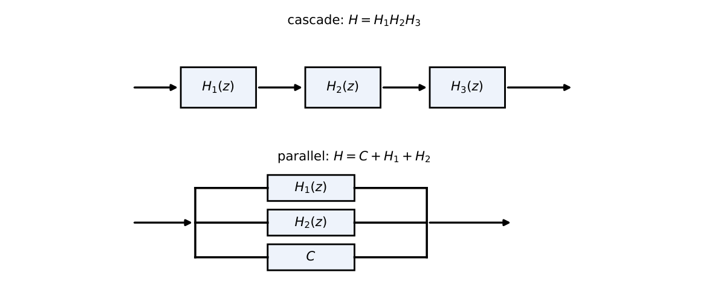
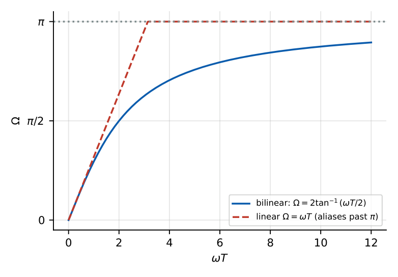
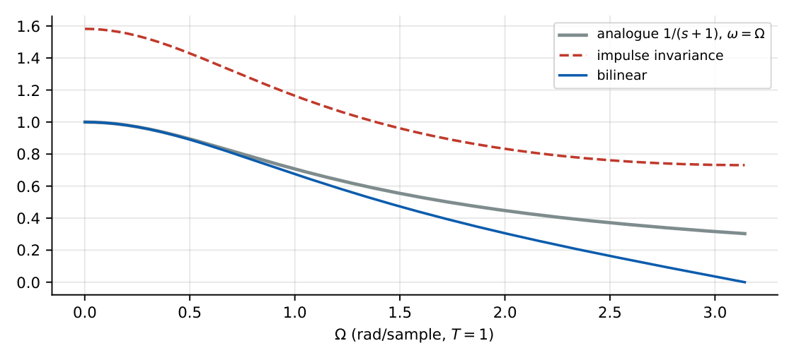
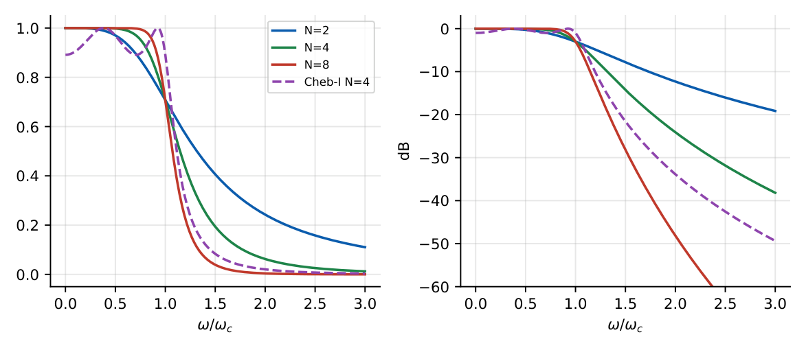
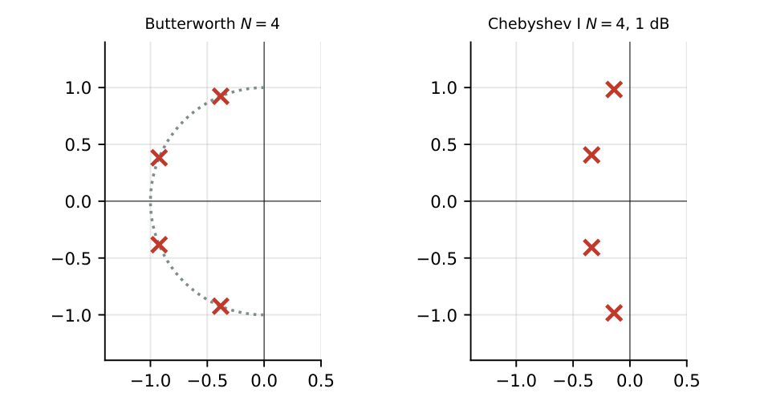

IIR Filters
In this chapter
- 27.1 IIR filter fundamentals
- 27.2 Difference-equation representation
- 27.3 Direct-form structures
- 27.4 Cascade form
- 27.5 Parallel form
- 27.6 Stability
- 27.7 Analog-to-digital filter conversion
- 27.8 Impulse invariance
- 27.9 Bilinear transformation
- 27.10 Frequency warping
- 27.11 Butterworth filters
- 27.12 Chebyshev filters
- 27.13 Pole–zero placement
- 27.14 IIR filter implementation
Bilinear transform (warping, prewarping), impulse invariance (pole mapping \(z=e^{pT}\), aliasing), Butterworth vs Chebyshev order calculation, structures (direct form II, cascade, parallel), stability from poles.
27.1 IIR filter fundamentals
An IIR filter has feedback: the impulse response is (in general) infinite. A rational \(H(z)=\dfrac{\sum b_kz^{-k}}{1+\sum a_kz^{-k}}\) can meet a given magnitude specification with far fewer coefficients than an FIR, but its phase is non-linear and stability must be checked.
27.2 Difference-equation representation
\(y[n]=-\sum_{k=1}^{N}a_ky[n-k]+\sum_{k=0}^{M}b_kx[n-k]\). Order \(=\max(M,N)\).
27.3 Direct-form structures
- Direct form I: implements the numerator (feed-forward) then the denominator (feedback); needs \(M+N\) delays.
- Direct form II (canonic): shares one delay line; needs only \(\max(M,N)\) delays (minimum for the order).
- Transposed forms: obtained by reversing all arrows; the same transfer function.

27.4 Cascade form
Factor \(H(z)=\prod_kH_k(z)\) into second-order sections; each section has real coefficients. Preferred in practice: lower sensitivity to coefficient quantisation; poles and zeros paired.
27.5 Parallel form
Partial-fraction expansion: \(H(z)=C+\sum_k\dfrac{A_k}{1-p_kz^{-1}}\) (pair complex-conjugate poles into second-order sections). Error propagation is limited to each branch; zeros are not directly controlled.

27.6 Stability
Causal IIR filter stable \(\Leftrightarrow\) all poles \(|p_k|<1\). Coefficient quantisation moves poles: high-order direct forms with poles near the unit circle are sensitive; use cascade/parallel.
27.7 Analog-to-digital filter conversion
Design an analogue prototype \(H_a(s)\) meeting the transformed specifications, then map to \(H(z)\). The mapping must send the \(j\omega\) axis to the unit circle and the left half-plane inside it (to preserve stability).
27.8 Impulse invariance
Sample the analogue impulse response: \(h[n]=T\,h_a(nT)\).
Pole mapping: \(\dfrac{A}{s-p_k}\ \longrightarrow\ \dfrac{TA}{1-e^{p_kT}z^{-1}}\), i.e. \(z_k=e^{p_kT}\).
Frequency mapping \(\Omega=\omega T\) (linear) but \(H(e^{j\Omega})=\sum_kH_a\!\big(j\tfrac{\Omega+2\pi k}{T}\big)\): aliasing. Suitable only for band-limited (low-pass/band-pass) prototypes; not for high-pass.
\(H_a(s)=\dfrac1{s+1}\), \(T=1\): \(h_a=e^{-t}u(t)\), \(h[n]=e^{-n}u[n]\), \(H(z)=\dfrac1{1-0.368z^{-1}}\). DC gain \(=1.582\ne H_a(0)=1\) (aliasing/scaling).
27.9 Bilinear transformation
\(s=\dfrac2T\,\dfrac{1-z^{-1}}{1+z^{-1}}\), \(z=\dfrac{1+sT/2}{1-sT/2}\).
Maps the \(j\omega\) axis one-to-one onto the unit circle (no aliasing) and LHP \(\to\) inside the unit circle.
\(H_a(s)=\dfrac1{s+1}\), \(T=1\): \(s=2\dfrac{1-z^{-1}}{1+z^{-1}}\), \(H(z)=\dfrac{1+z^{-1}}{3-z^{-1}}=\dfrac13\cdot\dfrac{1+z^{-1}}{1-\frac13z^{-1}}\): pole \(z=\tfrac13\) (from \(s=-1\): \(z=\frac{1-0.5}{1+0.5}=\tfrac13\)), zero at \(-1\); DC gain \(1\) (\(=H_a(0)\)).
27.10 Frequency warping
On the unit circle \(z=e^{j\Omega}\): \(s=j\omega\) with \[\omega=\frac2T\tan\frac\Omega2,\qquad\Omega=2\tan^{-1}\frac{\omega T}2.\] The mapping is non-linear (compresses high frequencies into \(\Omega<\pi\)). Prewarping: to obtain digital critical frequency \(\Omega_k\), design the analogue prototype at \(\omega_k=\frac2T\tan\frac{\Omega_k}2\).

Digital cutoff \(\Omega_c=0.5\pi\), \(T=1\): \(\omega_c=2\tan(\pi/4)=2\) rad/s. First-order analogue prototype \(\dfrac2{s+2}\) \(\to\) \(H(z)=\dfrac{1+z^{-1}}{2}\), and \(|H(e^{j\Omega})|=\cos\frac\Omega2\) equals \(0.707\) at \(\Omega=\pi/2\). ✓

27.11 Butterworth filters
\(|H_a(j\omega)|^2=\dfrac1{1+(\omega/\omega_c)^{2N}}\): maximally flat; \(-3\) dB at \(\omega_c\); roll-off \(-20N\) dB/decade; monotonic.
Poles: \(s_k=\omega_ce^{j\pi(2k+N+1)/2N}\), \(k=0..N-1\), equally spaced on a semicircle in the LHP.
Order: \(N\ge\dfrac{\log\left[\dfrac{10^{0.1\alpha_s}-1}{10^{0.1\alpha_p}-1}\right]}{2\log(\omega_s/\omega_p)}\).
Example \(N=3\): \(H=\dfrac{1}{(s+1)(s^2+s+1)}\) (\(\omega_c=1\)), poles \(-1\), \(-0.5\pm j0.866\).
27.12 Chebyshev filters
Type I: \(|H_a|^2=\dfrac1{1+\varepsilon^2T_N^2(\omega/\omega_p)}\): equiripple in the passband, monotonic in the stopband; poles on an ellipse. Sharper transition than Butterworth of the same order.
Order: \(N\ge\dfrac{\cosh^{-1}\sqrt{\dfrac{10^{0.1\alpha_s}-1}{10^{0.1\alpha_p}-1}}}{\cosh^{-1}(\omega_s/\omega_p)}\). Ripple: \(\varepsilon=\sqrt{10^{0.1\alpha_p}-1}\).


\(\alpha_p=1\) dB at \(1\) kHz, \(\alpha_s=40\) dB at \(2\) kHz: ratio \(\dfrac{10^{4}-1}{10^{0.1}-1}=3.86\times10^4\).
Butterworth: \(N\ge\dfrac{\log_{10}(3.86\times10^4)}{2\log_{10}2}=7.62\to\mathbf 8\). Chebyshev: \(N\ge\dfrac{\cosh^{-1}(196.5)}{\cosh^{-1}2}=\dfrac{5.97}{1.317}=4.54\to\mathbf5\).
27.13 Pole–zero placement
Peaks (resonances) from poles close to the unit circle; notches from zeros on the circle. A second-order resonator with poles \(re^{\pm j\Omega_0}\): peak near \(\Omega_0\), bandwidth \(\approx2(1-r)\).
27.14 IIR filter implementation
Cascade of second-order direct-form II sections (or transposed), scaling to avoid overflow, and ordering pole–zero pairs to limit noise. Compare with FIR: IIR is efficient but has non-linear phase and possible limit cycles.
Q1. The bilinear transformation maps the \(j\omega\) axis to (A) the real axis (B) the unit circle, one-to-one (C) the unit circle, many-to-one (D) the imaginary axis.
Q2. In impulse invariance a pole \(s=p\) maps to (A) \(z=p\) (B) \(z=e^{pT}\) (C) \(z=\frac{1+pT/2}{1-pT/2}\) (D) \(z=e^{p/T}\).
Q3. A Butterworth response is (A) equiripple in the passband (B) maximally flat (C) equiripple in the stopband (D) linear phase.
Answers: Q1 (B). Q2 (B). Q3 (B).
Q4. Specifications \(\alpha_p=1\) dB, \(\alpha_s=40\) dB, \(\omega_s/\omega_p=2\). The minimum Butterworth order is (A) 5 (B) 6 (C) 7 (D) 8.
Q5. \(H_a(s)=\dfrac1{s+1}\) mapped by bilinear (\(T=1\)) has pole at (A) \(z=1/3\) (B) \(z=0.368\) (C) \(z=-1/3\) (D) \(z=1\).
Answers: Q4 (D): \(7.62\to8\). Q5 (A).
Q6. With \(T=1\), the analogue prewarped cutoff for a digital cutoff \(\Omega_c=0.5\pi\) is rad/s.
Q7. The impulse-invariant pole of \(1/(s+1)\) with \(T=1\) is at \(z=\) (three decimals).
Answers: Q6: \(2\tan(\pi/4)=2\). Q7: \(e^{-1}=0.368\).
Q8. Which are true? (A) Bilinear transform avoids aliasing. (B) Impulse invariance is unsuitable for high-pass. (C) Chebyshev I has equiripple stopband. (D) Direct form II is canonic.
Answers: Q8: (A), (B), (D). (C) is false: Type I is equiripple in the passband.
(i) Forgetting prewarping in bilinear design. (ii) \(z=e^{pT}\) (impulse invariance) vs \(\frac{1+pT/2}{1-pT/2}\) (bilinear). (iii) Chebyshev order uses \(\cosh^{-1}\), Butterworth uses \(\log\). (iv) Rounding the order down (always round up). (v) Impulse invariance scales by \(T\).
T1. Butterworth spec: \(\alpha_p=3\) dB at \(\omega_p=1\), \(\alpha_s=20\) dB at \(\omega_s=2\). Find \(N\). T2. Bilinear pole of \(\frac1{s+2}\), \(T=1\)?
Answers: T1: \(\dfrac{10^{2}-1}{10^{0.3}-1}=\dfrac{99}{0.995}=99.5\); \(N\ge\dfrac{\log_{10}99.5}{2\log_{10}2}=\dfrac{1.998}{0.602}=3.32\to4\). T2: \(z=\frac{1-1}{1+1}=0\).
- DF-II: \(\max(M,N)\) delays. Cascade of biquads preferred. Stable iff \(|p|<1\).
- Impulse invariance: \(z=e^{pT}\), \(h[n]=Th_a(nT)\), aliasing. Bilinear: \(s=\frac2T\frac{1-z^{-1}}{1+z^{-1}}\), \(\omega=\frac2T\tan\frac\Omega2\), prewarp.
- Butterworth: \(|H|^2=\frac1{1+(\omega/\omega_c)^{2N}}\); \(N=\frac{\log[\ldots]}{2\log(\omega_s/\omega_p)}\). Chebyshev: \(\cosh^{-1}\) form, equiripple pass, fewer poles.